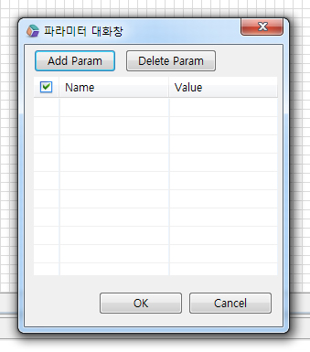

16.Flash
WebSquare에서 Flash를 사용하게 하는 컴포넌트입니다. embed태그로 표현됩니다.
16.1Property
Property | Description |
|---|---|
accesskey | 객체의 단축 접속키(key)를 지정합니다. |
align | 태그에 대한 align 값을 지정하며 브라우저 윈도우 내에 파일의 위치를 지정하는 방식을 결정합니다. |
atomicselection | 객체의 전체선택 가능 여부를 지정합니다. |
autostart | 자동시작 여부를 지정합니다. |
bgcolor | 객체의 배경색을 지정합니다. |
class | 사용자가 임의의 class를 정의할때 사용합니다. |
dir | 객체의 내용을 읽는 순서를 지정합니다. |
disabled | 객체의 비활성화 여부를 지정합니다. |
groupid | groupid값을 지정합니다. |
hidden | 객체의 숨김 처리 여부를 지정합니다. |
hidefocus | 객체의 포커싱 인식 여부를 지정합니다. |
id | 사용자가 임의의 id를 정의할때 사용합니다. |
lang | 사용된 언어 코드를 지정합니다. |
language | 작성된 스크립트 언어를 지정합니다. |
loop | 객체의 반복 재생 횟수 및 여부를 지정합니다. |
name | 객체의 Name 속성을 지정합니다. |
palette | 객체에 전경 또는 배경색을 지정합니다. |
pluginspage | 객체에 사용된 plug-in의 주소를 입력합니다. |
quality | 객체의 품질을 지정합니다. |
ShowControls | 콘트롤 영역 표시 여부를 지정합니다. |
ShowDisplay | 디스플레이 영역 표시 여부를 지정합니다. |
ShowStatusBar | 상태바 영역 표시 여부를 지정합니다. |
src | 객체의 로딩 주소(URL)를 지정합니다. |
title | 일반적인 title 값입니다. |
units | Width와 Height 속성의 단위를 지정합니다. |
unselectable | Element의 선택 비활성 유무를 지정합니다. |
wmode | 객체의 z-index를 처리하는 방법을 지정합니다. |
16.2주의사항 및 Tip
Flash에서 사용되는 파라미터는 Flash컴포넌트를 더블클릭하면, 파라미터 대화창에서 설정이 가능합니다.

[그림 16-1]01